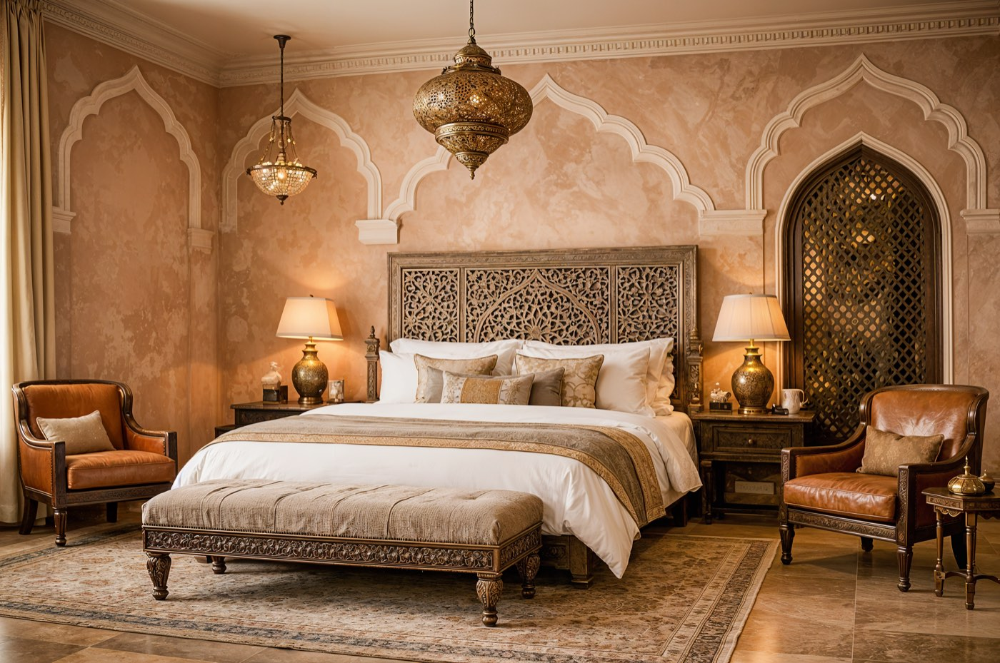

A boutique hotel cannot compete with a big hotel on size, facilities or marketing budget. It competes on character. Guests choose it because it feels like nowhere else, and the architecture is where that feeling starts.
Boutique hotels are one of the most interesting projects an owner in India can take on. They suit smaller plots, heritage buildings, pilgrimage towns, hill stations and city neighbourhoods where a large hotel would never fit. But a small hotel needs its own kind of planning. With fewer rooms to spread the costs, every square foot has to earn its place, and the design has to give guests a reason to choose it and come back.
This guide explains how boutique hotel architecture works in India: what makes a hotel boutique, where it works, new build or conversion, planning a small hotel that pays, the guest journey, rooms, the street front, interiors, cost and the mistakes we see. It draws on our hospitality work, including a boutique hotel in Vrindavan and the craft-led heritage interiors we designed for the Sangam Pooja Wellness Resort in Prayagraj.
What Makes a Hotel "Boutique"?
There is no official definition of a boutique hotel in India or anywhere else. Sources disagree on room count. HVS, for example, describes a luxury boutique hotel as a small property with less than 60 keys, while others set much lower or higher limits. In practice, size matters less than three qualities:
- A distinct identity. The hotel has its own look and story, rather than the same design repeated across a chain.
- A strong sense of place. It draws on its town, neighbourhood or landscape, so guests feel they are somewhere specific.
- Personal scale. Few enough rooms that staff know guests and every space can be designed with care.
Architecturally, that means the building, the interiors and the service all have to tell the same story. A small hotel with a generic design is just a small hotel.
Where Boutique Hotels Work in India
HVS notes that luxury boutique hotels are still at a nascent stage in India, and that many leisure destinations lack quality accommodation. It points out that smaller land parcels make boutique properties practical in these under-served markets. From our experience, the strongest settings are:
- Pilgrimage and heritage towns. Places like Vrindavan, Varanasi, Prayagraj or Rishikesh, where visitors want to stay close to the old town and large plots are rare.
- Heritage cities. Jaipur, Udaipur, Jodhpur and Old Delhi, where havelis and old houses can become hotels.
- Hill stations. Small sloping sites where a large hotel would be out of scale. Our guide to mountain hotel architecture covers the hill-specific design.
- City neighbourhoods. Characterful areas where a design-led hotel can stand apart from business chains.
- Nature and wellness retreats. Forest, river or farm settings where a few well-designed rooms suit the landscape better than a big block.
Start With a Story
Every good boutique hotel we know starts with an idea that can be explained in a sentence. It might come from the building's history, the owner's family, the town's craft traditions, a view, or a way of living. That idea then guides every decision, from the facade to the door handles.
For a heritage town, the story might be the old courtyard house and the craftspeople who built it. For a pilgrimage town, it might be calm and simplicity after a crowded day. For a hill station, it might be the forest and the view. The idea gives direction. When the design team and the owner share it, the hotel feels coherent, and guests remember it.

New Build or Conversion?
Many boutique hotels in India are conversions of havelis, bungalows, palaces or old townhouses. Others are new buildings designed to feel personal. Both can work, and each has its own challenges.
| New build | Conversion of an old building | |
|---|---|---|
| Character | Has to be created through design | Comes with the building, if it is respected |
| Layout | Planned around the hotel from the start | Rooms, stairs and services must fit an existing structure |
| Services | Straightforward to plan | Lifts, plumbing, air-conditioning and fire safety are hard to fit discreetly |
| Cost and time | More predictable | Less predictable, with surprises once walls are opened |
| Approvals | Standard building approvals | May also involve heritage rules, plus fire and structural safety upgrades |
Converting a haveli or old house
Recent reporting by Tatler Asia on haveli hotels in Rajasthan describes properties such as Abode Jaipur, a 21-room hotel in a 300-year-old haveli, and warns about the damage poor restoration can do, including erased frescoes and lost authenticity. One owner quoted there puts it simply: well-intentioned but ill-informed interventions can be more harmful than neglect.
For a conversion, we start with a careful survey of what exists: structure, walls, roofs, decoration, and the condition of each. The aim is to repair rather than replace, to fit new services where they do least harm, and to accept that some rooms will be different sizes and shapes. That variety is part of the appeal. Our heritage hotel architecture page covers how we approach heritage buildings.
Planning a Small Hotel That Pays
A boutique hotel has fewer rooms to carry the cost of the lobby, kitchen, staff, lifts and services. That makes planning efficiency just as important as in a large hotel, and in some ways more so. The principles we follow:
- Public spaces that do more than one job. As Hospitality Net's guide to boutique hotel design suggests, a small hotel's dining room should switch easily between breakfast, all-day dining and private events. The same goes for a lounge that works as reception, bar and library.
- Compact but complete back-of-house. Kitchen, stores, laundry and staff rooms can be small, but they cannot be missing. Outsourcing laundry is common and saves space. See our guide to hotel back-of-house planning for the full list.
- Rooms that can command a higher rate. A boutique hotel usually earns more per room than a standard hotel, so rooms tend to be generous. Our hotel room size guide gives typical ranges, such as 250–320 sq ft for a deluxe room and 450 sq ft and above for a suite, and many boutique rooms sit at the upper end.
- A few room types, not just one. Different rooms at different price points, such as a courtyard room, a terrace room and a suite, let the hotel reach more guests.
- Something extra that earns. A rooftop restaurant, a small spa, a courtyard for intimate weddings or a cafe open to the street can add revenue beyond the rooms.
Before the design is fixed, these choices should be tested against the numbers. Our guide to the hotel feasibility study explains how.
Designing the Guest Journey
In a small hotel, guests notice everything. The walk from the street to the room is short, so each part of it has to count.
Arrival and lobby
The lobby sets the tone for the whole stay. In a boutique hotel it should feel more like the living room of a fine house than a check-in counter. A seating area where guests can wait, read or meet works better than a long reception desk.
Stairs, lifts and corridors
Guests spend more time in these spaces than owners expect. A generous staircase, a lift lobby with art or a view, and corridors with warm lighting and soft finishes make the hotel feel cared for. Service doors, trolleys and storage should be hidden from the guest route, and corridor floors chosen to handle trolley traffic quietly.
Courtyards and terraces
Indian buildings have long been organised around courtyards, verandahs and roof terraces. In a boutique hotel, these become the spaces guests remember: breakfast in a courtyard, evening tea on a terrace, a view across the old town.

Rooms That Guests Remember
- Each room with its own character. Variety in layout, view, colour or craft gives returning guests a reason to try another room, and gives the hotel stories to tell.
- Sleep first. A good bed, blackout curtains, sound insulation between rooms and quiet air-conditioning matter more than any decoration.
- Bathrooms as a highlight. A generous, well-lit bathroom with good materials is one of the things guests photograph and mention most.
- Local craft in the details. Headboards, lamps, textiles, door hardware and art made by local craftspeople connect the room to the place. At Sangam Pooja, suite interiors use hand-carved jali headboards within a palette of marble, carved wood, brass and lime plaster.
- Room to live, not just sleep. A seat by the window, a small balcony or a writing desk turn a room into somewhere guests want to spend time.

The Street Front and the Facade
A boutique hotel usually sits among other buildings, often on a busy street, with a narrow frontage. Its facade has to do a lot: announce the hotel, give it a recognisable image, and still respect the street. Our Vrindavan boutique hotel uses a neo-classical facade to give a compact building a strong presence. In a heritage town, the facade might instead follow the local language of stone, jharokhas and arches. In a hill station, it might be timber, stone and a sloping roof.
Lighting is part of the facade. Many guests first see the hotel at night, and warm, careful lighting of the entrance and key details makes it look welcoming and photographs well.
Architecture and Interiors as One
In a boutique hotel, the line between architecture and interior design almost disappears. The arches, ceilings, floors, joinery and lighting are as much part of the guest experience as the walls and windows. That is why we prefer to design both in the same studio, so there is no gap between the building and what goes inside it. At Sangam Pooja, a common palette of hand-polished marble with geometric inlay, carved wood, brass lighting and hand-applied lime plaster ties every space together, from the vaulted lobby to the suites.
Designing for How the Hotel Will Run
A boutique hotel often runs with a small team, and many are owner-managed. The building should make their work easy, because in a small hotel every inefficiency shows up in the service.
- One clear service route. A back stair or service lift that links the kitchen, stores, laundry and every guest floor, so staff never carry trays and linen through the lobby.
- Reception that can see the entrance. With few staff on duty at night, the front desk should overlook the entrance and the main stair.
- Storage on every floor. A small linen and housekeeping store per floor saves hours of walking each day.
- Staff spaces with daylight. A staff room, changing area and toilets that people are happy to use help a small team stay.
- Maintenance access. Air-conditioning units, water tanks and electrical panels placed where they can be serviced without disturbing guests.
Approvals and Licences
A small hotel needs most of the same approvals as a large one, and they should be planned into the design from the start. Requirements vary by state and city, so confirm them locally:
- Land use. The plot or building must be in a zone where a hotel is permitted, or need a change of land use. Converting a house into a hotel is a change of use.
- Building plan approval. For a new building, or for significant alterations to an old one.
- Fire NOC. Exits, staircases, fire detection and fire-fighting must meet the rules for hotels. In old buildings, this is often the hardest part to achieve discreetly.
- Heritage permissions. Where the building or area is protected, works may need approval from the heritage authority.
- Operating licences. Trade licence, food licence for the kitchen, and where relevant a bar licence and state tourism registration.
In a conversion, it pays to check the fire and structural requirements before buying or leasing the building, because they can decide how many rooms it can legally hold.
What a Boutique Hotel Costs
Boutique hotels usually sit at the top of the construction cost range because of their finishes, craft and generous rooms. The ranges our studio uses as starting points for luxury and boutique hospitality in India, excluding land, are about ₹1.5–3.5 crore per key, or roughly ₹9,000–15,000+ per sq ft of built-up area. Conversions of old buildings can vary even more, because the condition of the structure is only fully known once work begins.
The small number of rooms means costs per key are sensitive to the fixed elements every hotel needs: a kitchen, a lift, fire systems, a reception. A feasibility study should test whether the room rate the location can support will repay that investment.
Mistakes We See in Boutique Hotels
- A theme instead of a story. Decoration copied from elsewhere, with no connection to the place or the building.
- Too many rooms squeezed in. Cutting room sizes to add keys, which undermines the rate the hotel can charge.
- Forgetting the back-of-house. No proper kitchen, stores or staff rooms, so service suffers on busy nights.
- Over-restoring a heritage building. Replacing original fabric with new copies, or covering old walls with modern finishes.
- Services as an afterthought. Air-conditioning units, pipes and wires added late and left visible, especially in conversions.
- Ignoring sound. Thin walls and floors between rooms in a hotel that sells calm.
Our Boutique and Craft-Led Hospitality Work
Boutique hotel, Vrindavan (Uttar Pradesh)
A boutique hotel in the pilgrimage town of Vrindavan, with a neo-classical facade that gives the compact building a distinctive presence. See our hotel work.
Sangam Pooja Wellness Resort interiors, Prayagraj
Hospitality interiors rooted in Indo-Islamic craftsmanship, with a vaulted lobby, heritage dining with arched alcoves, and suites with hand-carved jali headboards, all in a shared palette of marble, carved wood, brass and lime plaster. See the Sangam Pooja interiors.
Frequently Asked Questions
What is a boutique hotel?
A boutique hotel is a small hotel with a distinct identity, a strong sense of place and a personal scale of service. There is no official definition or fixed room count. HVS, for example, describes a luxury boutique hotel as a property with fewer than 60 keys, while other sources use lower or higher limits. Character matters more than size.
How many rooms does a boutique hotel have?
There is no fixed number. Many boutique hotels in India have somewhere between a handful of rooms and a few dozen, and HVS uses fewer than 60 keys for a luxury boutique hotel. The right number depends on the site, the building and the room rate the location can support.
How much does it cost to build a boutique hotel in India?
As a starting point, luxury and boutique hospitality projects typically cost about ₹1.5–3.5 crore per key to build, or roughly ₹9,000–15,000+ per sq ft, excluding land. Conversions of old buildings vary more, because the condition of the structure is only fully known once work starts.
Can an old haveli or house be converted into a boutique hotel?
Yes, and many of India's best boutique hotels are conversions. It needs a careful survey of the structure, repair rather than replacement of original features, and discreet ways to add lifts, plumbing, air-conditioning and fire safety. It also needs the right approvals, which can include heritage rules as well as building and fire clearances.
What makes boutique hotel architecture different from a regular hotel?
A regular hotel is planned for efficiency and consistency. A boutique hotel is planned around identity and experience: a story that guides the design, a strong connection to its place, varied rooms, craft in the details, and public spaces that work hard because there are fewer rooms to carry the costs.
Small Hotel, Strong Idea
A boutique hotel succeeds when one clear idea runs through everything: the building, the rooms, the materials and the way guests are welcomed. Planned carefully, a small hotel can earn as much loyalty as a large one, and often a better room rate.
If you have a building or a plot that could become a boutique hotel, talk to our studio, or explore our resort & hotel architecture practice.